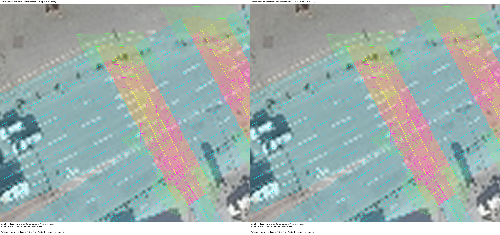

Visual review only. Field accuracy and temporal alignment require review.
Freie und Hansestadt Hamburg, LGV | Datenlizenz Deutschland Namensnennung 2.0 | Capture: 2026

Road annotations do not establish turning permission or available space.
| Junction | From | To | Structure |
|---|
Road annotations do not establish turning permission or available space.
| Junction | From | To | Structure |
|---|